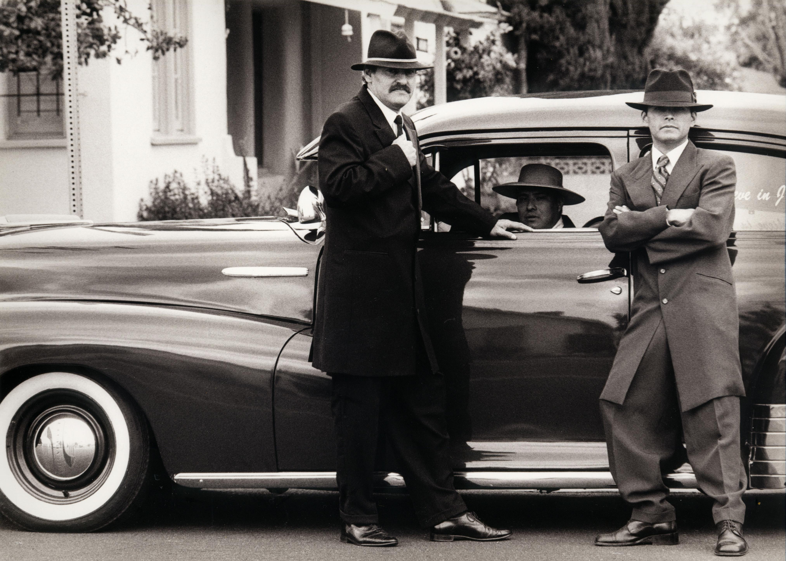

Entführerteam
Entführerteam
Zuständig für Planung, Geheimhaltung, operative Abstimmung und die kontrollierte Rückführung der Zielperson.
Beteiligte Stellen: Angelika, Melanie, Mirjam und Natalie.
Kein PayPal-Link. Diese Personen handeln aus familiärer Verpflichtung.